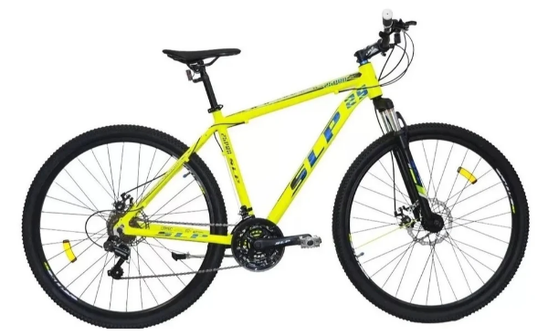

SLP 25PRO

| Marca | Modelo | Tipo | Cuadro | Rodado | Color | Horquilla | Tipo de frenos | Equipamiento de cambios | Velocidades |
|---|---|---|---|---|---|---|---|---|---|
| Slp | 25pro | Mountain Bike | Aluminio | 29" | Negro-Amarillo-Azul | Suspensión de acero | A discos | Shimano | 21 |